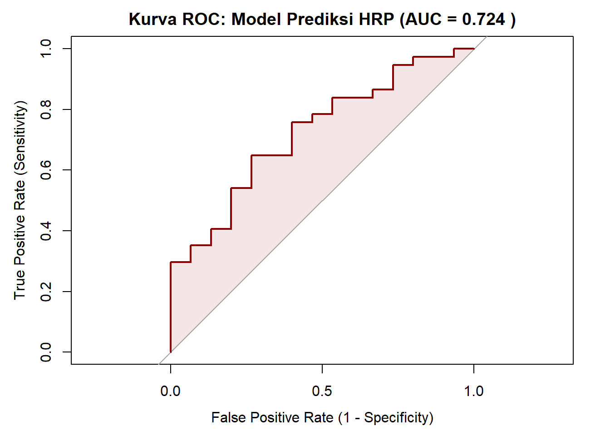
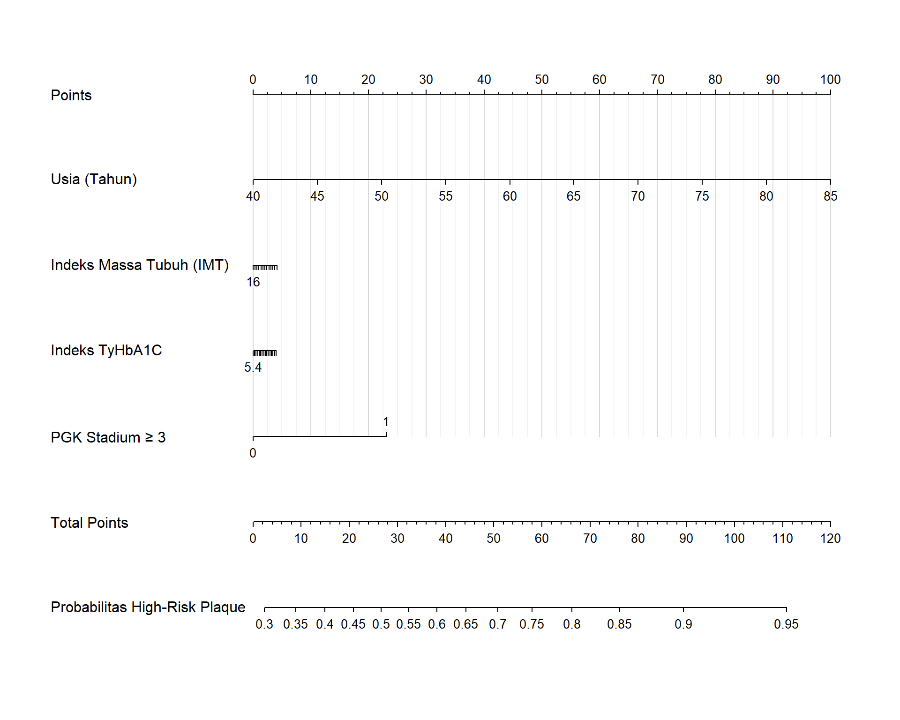
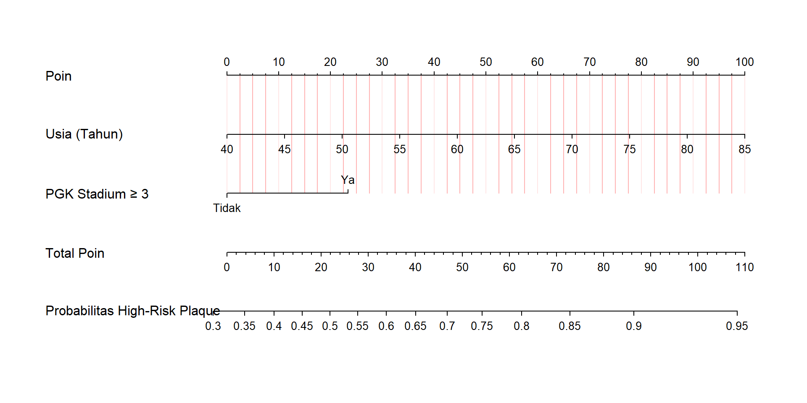
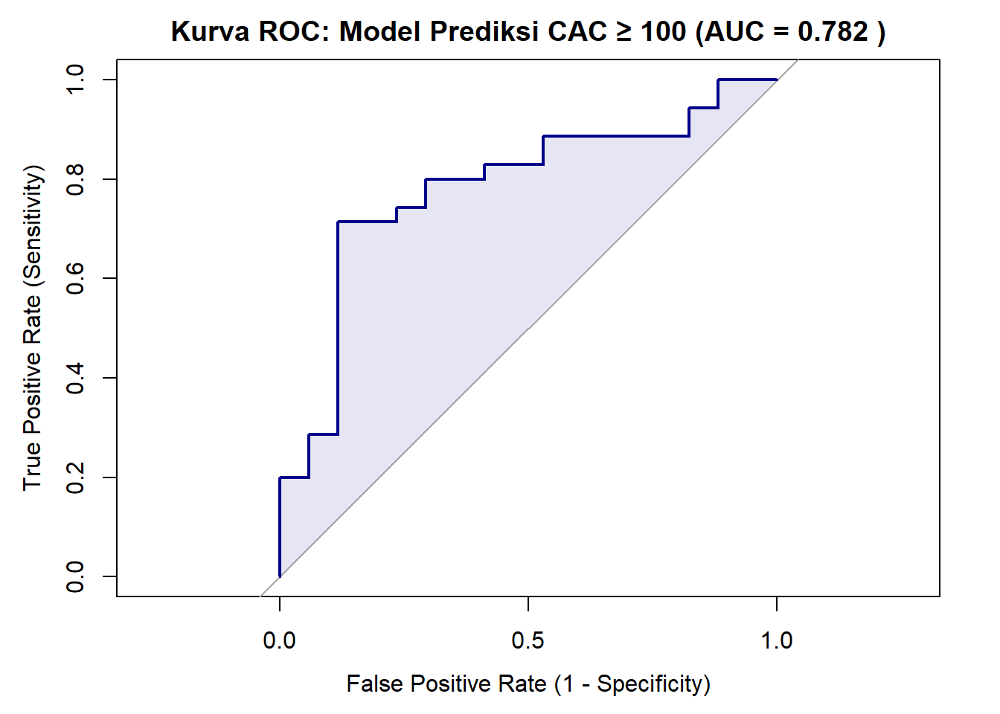
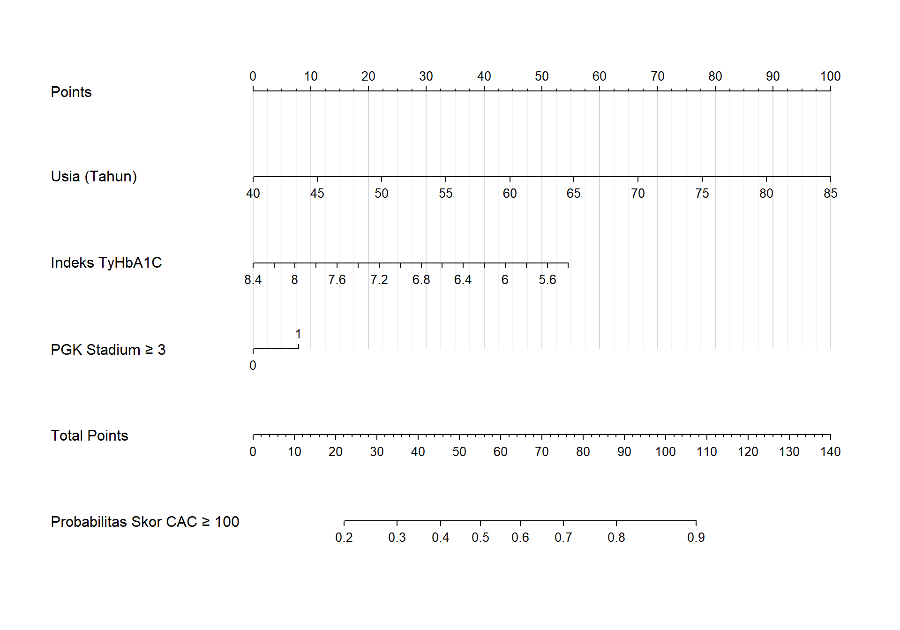

Kombinasi TyHbA1c Index, Usia, dan Indeks Massa Tubuh sebagai Prediktor High-Risk Plaque pada Pasien Diabetes Mellitus: Sebuah Pendekatan Nomogram Klinis
Penulis
Afiliasi
Kadek Adit Wiryadana
RSUP Ngoerah
Diterbitkan
27 Agustus 2026, 22:52
Abstrak
Penyakit kardiovaskular aterosklerotik tetap menjadi penyebab utama morbiditas dan mortalitas pada pasien Diabetes Mellitus (DM), di mana evaluasi Computed Tomography Coronary Angiography (CTCA) dapat mengidentifikasi High-Risk Plaque (HRP) sebagai prekursor utama sindrom koroner akut. Penelitian ini bertujuan untuk mengevaluasi kemampuan prediktif kombinasi Indeks TyHbA1c, Usia, Indeks Massa Tubuh (IMT), dan status Penyakit Ginjal Kronis (PGK Stadium \(\ge\) 3) terhadap keberadaan HRP serta beban kalsifikasi koroner moderat-berat (CAC \(\ge\) 100 Agatston), sekaligus mengembangkan pendekatan stratifikasi ganda melalui nomogram klinis. Menggunakan desain potong lintang (cross-sectional) pada pasien prediabetes dan DM yang menjalani pemeriksaan CTCA di RSUP Prof. dr. I.G.N.G. Ngoerah pada periode 1 Januari hingga 31 Desember 2025, total 52 subjek dianalisis. Analisis regresi logistik multivariat menunjukkan bahwa kombinasi parameter kardiometabolik tersebut memiliki kemampuan diskriminasi yang baik dalam memprediksi HRP dengan nilai Area Under the Curve (AUC) sebesar 0,724, dan terbukti semakin superior dalam memprediksi skor CAC \(\ge\) 100 dengan AUC 0,782. Usia dan komplikasi ginjal (PGK) terbukti secara statistik signifikan meningkatkan probabilitas kerentanan plak, sementara faktor degeneratif usia menjadi prediktor tunggal yang paling dominan terhadap akumulasi kalsium masif. Model multivariat ini berhasil dikonstruksikan ke dalam bentuk tiga nomogram klinis aplikatif (HRP komprehensif, HRP tereduksi, dan beban CAC). Simpulannya, kombinasi Indeks TyHbA1c, usia, IMT, dan status PGK efektif memprediksi kualitas kerentanan plak (HRP) sekaligus kuantitas kalsifikasi anatomis, dan dapat dimanfaatkan sebagai instrumen skoring klinis penunjang rujukan pemeriksaan CTCA yang presisi di ruang praktik.
Abstract Atherosclerotic cardiovascular disease remains the leading cause of morbidity and mortality in Diabetes Mellitus (DM) patients, where Computed Tomography Coronary Angiography (CTCA) evaluation identifies High-Risk Plaque (HRP) as a primary precursor of acute coronary syndrome. This study aims to evaluate the predictive ability of a combination of TyHbA1c Index, Age, Body Mass Index (BMI), and Chronic Kidney Disease status (CKD Stage \(\ge\) 3) for HRP presence and moderate-to-severe coronary artery calcification burden (CAC \(\ge\) 100 Agatston), as well as to develop a dual-stratification clinical nomogram approach. Utilizing a cross-sectional design among prediabetes and DM patients undergoing CTCA at RSUP Ngoerah from January 1 to December 31, 2025, a total of 52 subjects were analyzed. Multivariate logistic regression analysis revealed that the combination of these parameters demonstrated good discriminative performance in predicting HRP with an Area Under the Curve (AUC) of 0.724, and demonstrated even superior performance in predicting a CAC score \(\ge\) 100 with an AUC of 0.782. Age and renal impairment status significantly increased the probability of plaque vulnerability, while the degenerative factor of age emerged as the most dominant predictor for massive calcium accumulation. This multivariate model was successfully constructed into three clinical nomograms for non-invasive dual risk stratification. In conclusion, the combination of TyHbA1c Index, age, BMI, and CKD status effectively predicts both plaque vulnerability (HRP) and calcification burden, and can be utilized as a clinical scoring tool to support precise CTCA referral practices.
Penyakit kardiovaskular aterosklerotik (ASCVD) tetap menjadi penyebab utama morbiditas dan mortalitas pada pasien dengan Diabetes Mellitus (DM). Penggunaan parameter lipid konvensional seringkali menyisakan risiko residual yang tinggi, sehingga menuntut pencarian penanda biologis alternatif yang mampu merepresentasikan patofisiologi aterosklerosis secara lebih presisi. Resistensi insulin kronis diakui sebagai motor utama pemicu disfungsi endotel dan pembentukan plak dengan kerentanan tinggi (vulnerable plaque). Belakangan ini, Triglyceride-Glucose (TyG) Index mulai banyak digunakan sebagai penanda substitusi yang tervalidasi untuk menilai resistensi insulin. Kendati demikian, penggunaan parameter glukosa darah puasa (GDP) dalam formula TyG memiliki kelemahan mendasar akibat tingginya fluktuasi glikemik harian. Oleh karena itu, indeks TyHbA1c—yang mengintegrasikan kadar trigliserida dengan HbA1c—diajukan sebagai parameter yang jauh lebih stabil dan superior dalam mencerminkan akumulasi beban glukolipotoksisitas kronis.
Indeks TyHbA1c menawarkan pendekatan diagnostik yang menjanjikan namun patogenesis aterosklerosis pada populasi DM bersifat multifaktorial. Hal ini mutlak memerlukan inkorporasi dengan berbagai faktor risiko mapan lainnya yang telah ditemukan, seperti profil lipid (kolesterol), usia biologis, Indeks Massa Tubuh (IMT), dan khususnya status fungsi ginjal (Penyakit Ginjal Kronis/CKD). Berbagai literatur kardiometabolik menegaskan bahwa komplikasi nefropati diabetik bertindak sebagai katalisator yang mempercepat progresi aterosklerosis melalui poros kardiorenal (cardiorenal syndrome). Retensi toksin uremik, stres oksidatif persisten, serta gangguan metabolisme mineral pada pasien nefropati berinteraksi secara sinergis dengan kondisi glukolipotoksisitas untuk memicu kalsifikasi medial pembuluh darah dan degradasi stabilitas plak koroner secara masif. Kehadiran nefropati seringkali memunculkan efek ambang batas (threshold effect) yang melipatgandakan kerentanan vaskular melampaui efek parameter lipid atau glikemik semata.
Saat ini pada perspektif diagnostik aterosklerotik, evaluasi anatomi koroner non-invasif kini dapat dilakukan secara akurat menggunakan Computed Tomography Coronary Angiography (CTCA), yang tidak hanya menilai derajat keparahan stenosis (CAD-RADS), tetapi juga mengidentifikasi morfologi High-Risk Plaque (HRP) sebagai prekursor utama sindrom koroner akut. Hingga saat ini, pemodelan multivariat yang secara holistik mengintegrasikan penanda glukolipotoksisitas novel (TyHbA1c) bersama faktor degeneratif (Usia), adipositas viseral (IMT), dan penanda kardiorenal (CKD) belum banyak dieksplorasi. Oleh karena itu, penelitian ini bertujuan untuk menguji kemampuan prediktif kombinasi parameter klinis tersebut terhadap keberadaan HRP, sekaligus mengembangkan sebuah nomogram klinis guna memfasilitasi stratifikasi risiko kardiovaskular secara praktis dan presisi di ruang praktik.
2 Metode
Desain dan Populasi Penelitian
Penelitian ini merupakan studi analitik observasional dengan pendekatan potong lintang (cross-sectional). Populasi target adalah seluruh pasien yang menjalani pemeriksaan Computed Tomography Coronary Angiography (CTCA) di RSUP Prof. dr. I.G.N.G. Ngoerah, Denpasar, Bali, pada periode 1 Januari 2025 hingga 31 Desember 2025. Teknik pengambilan sampel menggunakan consecutive sampling hingga target sampel terpenuhi.
Kriteria inklusi dalam penelitian ini meliputi: (1) Pasien berusia \(\ge\) 18 tahun; (2) Memiliki rekam medis yang mencatat secara lengkap usia, jenis kelamin, antropometri, riwayat diagnosis Diabetes Mellitus (DM), durasi penyakit, serta riwayat penggunaan obat anti-diabetes (OAD/Insulin) dan terapi statin; (3) Memiliki hasil laboratorium darah yang lengkap dalam kurun waktu 30 hari dengan pemeriksaan CTCA, mencakup profil lipid (Trigliserida, Kolesterol Total, LDL, HDL), HbA1c, dan serum kreatinin. Sementara itu, kriteria eksklusi meliputi pasien dengan riwayat operasi Coronary Artery Bypass Grafting (CABG) atau pasien dengan gagal ginjal tahap akhir (End-Stage Renal Disease).
Pengumpulan Data dan Definisi Operasional
Data karakteristik demografi (Usia, Jenis Kelamin), antropometri (Indeks Massa Tubuh/IMT), riwayat penyakit penyerta, status pengobatan, serta parameter biokimia (HbA1c, Trigliserida, Kolesterol Total, LDL, HDL, Kreatinin) diekstraksi dari rekam medis elektronik (SIMRS). Indeks TyHbA1c dihitung menggunakan formula logaritma natural: TyHbA1c = ln(Trigliserida [mg/dL] x HbA1c [%]). Penyakit ginjal kronik dikategorikan dari hasil fungsi ginjal hasil perhitungan CKD-EPI dan kriteria sesuai pedoman KDIGO. Evaluasi CTCA dilakukan oleh dokter spesialis radiologi konsultan yang tersertifikasi. Variabel dependen utama dalam penelitian ini adalah:
**Keparahan Obstruksi Koroner:** Diklasifikasikan berdasarkan sistem CAD-RADS 2.0, di mana kategori obstruktif signifikan didefinisikan sebagai CAD-RADS \$\\ge\$ 3 (stenosis \$\\ge\$ 50%).
**Keberadaan High-Risk Plaque (HRP):** Ditetapkan sebagai variabel biner (Ya/Tidak), yang positif apabila ditemukan minimal satu dari empat fitur berikut pada lesi koroner: *positive remodeling* (PR), *low-attenuation plaque* (LAP), *spotty calcification* (SC), atau *napkin-ring sign* (NRS).
**Beban Kalsifikasi Koroner Moderat-Berat (CAC $\ge$ 100):** Ditetapkan sebagai variabel kategorikal sekunder, di mana skor kalsium *Agatston* $\ge$ 100 didefinisikan sebagai penanda beban aterosklerosis yang signifikan secara anatomis dan menjadi indikasi intervensi farmakologis agresif.
Analisis Statistik
Analisis data dilakukan menggunakan perangkat lunak R (R Foundation for Statistical Computing). Variabel kontinu disajikan dalam bentuk rerata dan simpangan baku (distribusi normal) atau median dan rentang interkuartil (distribusi tidak normal). Analisis komparatif bivariat dilakukan menggunakan uji Mann-Whitney U atau Independent T-test untuk variabel kontinu, serta uji Chi-Square atau Fisher’s Exact untuk variabel kategorik.
Pemodelan prediktif utama dilakukan menggunakan analisis Regresi Logistik Multivariat (Generalized Linear Model). Berdasarkan seleksi variabel dan patofisiologi klinis, prediktor yang dimasukkan ke dalam model utama (HRP komprehensif) adalah Usia, IMT, TyHbA1c Index, dan Status CKD. Selain itu, pemodelan prediktif tereduksi (menyertakan variabel independen kuat saja) dan pemodelan sekunder untuk memprediksi probabilitas beban kalsifikasi (skor CAC \(\ge\) 100) turut dieksekusi guna menghadirkan pendekatan stratifikasi risiko ganda (double stratification). Performa diskriminatif model dievaluasi menggunakan Area Under the Curve (AUC) dari kurva Receiver Operating Characteristic (ROC). Signifikansi statistik ditetapkan pada nilai \(p < 0,05\). Berdasarkan koefisien regresi dari model multivariat final, berbagai nomogram klinis dikonstruksi menggunakan paket rms di lingkungan R untuk memfasilitasi probabilitas prediksi personal secara visual.
2.0.0.0.1 1. Setup
Kode
library(readxl) # Untuk membaca data dari Excel lokallibrary(dplyr) # Untuk manipulasi datalibrary(pROC) # Untuk analisis kurva ROC dan AUClibrary(rms) # Untuk regresi dan pembuatan Nomogramlibrary(ggplot2) # Untuk visualisasi datalibrary(gtsummary) # Untuk membuat tabel hasil klinis yang rapilibrary(googlesheets4)library(tidyverse)
2.0.0.0.2 2. Loading Data
Kode
# Otorisasi Google Sheets (Pilih '0' atau login sesuai petunjuk di console R)gs4_auth(email =TRUE) # Tautan Google Sheetssheet_url <-"[https://docs.google.com/spreadsheets/d/18yyL48LTB-njD6iGNwiuYiiG4uCG1edVn6d3TYQnpE8/edit?gid=288598852#gid=288598852](https://docs.google.com/spreadsheets/d/18yyL48LTB-njD6iGNwiuYiiG4uCG1edVn6d3TYQnpE8/edit?gid=288598852#gid=288598852)"# Membaca datadf_raw <-read_sheet(sheet_url, sheet =1)
2.0.0.0.3 3. Data Cleaning
Kode
df_clean <- df_raw %>%# Filter pasien yang memiliki No. RMfilter(!is.na(`No. RM`)) %>%# Konversi tipe data karakter ke numerikmutate(across(c(Usia, IMT, HbA1C, Trigliserida, Kreatinin, `Kolesterol-Total`, LDL, HDL, `Asam-Urat`), ~as.numeric(gsub(",", ".", as.character(.x))))) %>%# Membersihkan skor CAC dan variabel lainmutate(Global_CAC_score =as.numeric(gsub(",", ".", gsub("[^0-9,.-]", "", as.character(Global_CAC_score)))),TyHbA1c_Index =log(Trigliserida * HbA1C),HRP_Status =ifelse(grepl("HRP", `Global_CAD-RADS`, ignore.case =TRUE), "HRP (+)", "HRP (-)"),HRP_Status =factor(HRP_Status, levels =c("HRP (-)", "HRP (+)")),# Variabel Dependen Baru untuk CAC >= 100CAC_100_plus =ifelse(Global_CAC_score >=100, 1, 0),Kappa =ifelse(Gender =="P", 0.7, 0.9),Alpha =ifelse(Gender =="P", -0.241, -0.302),Sex_Mult =ifelse(Gender =="P", 1.012, 1),eGFR =142* (pmin(Kreatinin / Kappa, 1)^Alpha) * (pmax(Kreatinin / Kappa, 1)^-1.200) * (0.9938^Usia) * Sex_Mult,CKD_Status =ifelse(eGFR <60, 1, ifelse(eGFR >=60, 0, NA)) ) %>%filter(!is.na(Usia), !is.na(IMT), !is.na(TyHbA1c_Index), !is.na(CKD_Status), !is.na(HRP_Status), !is.na(Global_CAC_score))# Menampilkan ringkasan sampel final#cat("Total sampel siap dianalisis (n):", nrow(df_clean), "\n")#table(Status_Ginjal = df_clean$CKD_Status, Status_HRP = df_clean$HRP_Status)
3 Hasil
Karakteristik Dasar dan Profil Klinis Subjek
Penelitian ini melibatkan 52 pasien dengan diagnosis diabetes atau prediabetes yang menjalani pemeriksaan Computed Tomography Coronary Angiography (CTCA) dan memenuhi kriteria inklusi. Mayoritas subjek adalah laki-laki (n = 34; 65.4%), dengan rentang usia rata-rata 61.04 \(\pm\) 9.9 tahun. Rerata Indeks Massa Tubuh (IMT) subjek berada pada ambang batas overweight (27.89 \(\pm\) 4.72 kg/m²).
Dari parameter biokimia, rata-rata kadar HbA1c subjek adalah 7.29 \(\pm\) 1.79%, dengan kadar trigliserida 162.83 \(\pm\) 124.01 mg/dL. Rerata nilai TyHbA1c Index pada populasi ini sebesar 6.87 \(\pm\) 0.64. Evaluasi fungsi ginjal menunjukkan bahwa 14 pasien (26.9%) mengalami disfungsi ginjal (Penyakit Ginjal Kronis/CKD) dengan nilai kreatinin serum > 1,2 mg/dL. Secara keseluruhan, nilai median Global CAC Score (kalsifikasi koroner) pada sampel adalah 300.1 (IQR: 16.8 – 904.7) Agatston. Data karakteristik subjek ditampilkan pada @tbl-baseline.
Proporsi Kemunculan High-Risk Plaque (HRP)
Berdasarkan evaluasi lesi koroner melalui pencitraan CTCA, proporsi penemuan High-Risk Plaque (HRP) terbilang tinggi. Sebanyak 37 pasien (71.2%) teridentifikasi positif memiliki HRP, sementara 15 pasien (28.8%) tidak menunjukkan fitur HRP.
Analisis komparatif menunjukkan bahwa pasien pada kelompok HRP (+) memiliki usia yang secara signifikan lebih tua (63.16 \(\pm\) 9.79 tahun) dibandingkan kelompok HRP (-) (55.8 \(\pm\) 8.32 tahun). Selain itu, derajat kalsifikasi koroner pada kelompok HRP (+) jauh lebih masif; kelompok ini mencatatkan median skor CAC mencapai 556.7 Agatston, berbanding sangat kontras dengan kelompok HRP (-) yang hanya memiliki median 11.6 Agatston.
Pemodelan regresi logistik multivariat (Generalized Linear Model) dilakukan untuk mengevaluasi kekuatan prediktif klinis komprehensif dengan memasukkan variabel Usia, IMT, TyHbA1c Index, dan Status CKD (Tabel 2). Hasil analisis mengonfirmasi bahwa Usia merupakan prediktor independen yang bermakna secara statistik terhadap pembentukan plak risiko tinggi (Odds Ratio [OR] = 1.08; 95% CI: 1 – 1.18; \(p\) = 0.05). Secara klinis, komplikasi fungsi ginjal memberikan dampak risiko yang masif; pasien dengan status CKD menunjukkan tren peningkatan probabilitas kerentanan plak hingga 2.24 kali lipat lebih tinggi dibandingkan pasien dengan ginjal normal (OR = 2.24; 95% CI: 0.43 – 17.16; \(p\) = 0.368). Sementara itu, variabel TyHbA1c Index dan IMT tidak menunjukkan kemaknaan statistik parsial secara independen dalam kohort terbatas ini.
Abbreviations: CI = Confidence Interval, OR = Odds Ratio
Performa Model Prediksi dan Nomogram Klinis
Meskipun secara parsial beberapa variabel tidak mencapai signifikansi statistik, kombinasi holistik dari keempat parameter klinis tersebut (Usia + IMT + TyHbA1c Index + CKD) menghasilkan daya diskriminasi diagnostik yang solid. Analisis Receiver Operating Characteristic (ROC) membuktikan bahwa model multivariat ini mampu membedakan probabilitas keberadaan HRP dengan nilai Area Under the Curve (AUC) sebesar 0.724 (Gambar 1).

Gambar 1. Kinerja Diskriminatif Model Prediksi High-Risk Plaque. Kurva ROC dari model komprehensif mengintegrasikan Usia, IMT, TyHbA1c Index, dan Status Penyakit Ginjal Kronis (CKD) dengan nilai Area Under the Curve (AUC) sebesar 0,724.
Model ini kemudian ditransformasikan secara visual ke dalam bentuk nomogram klinis komprehensif guna memfasilitasi estimasi probabilitas kemunculan vulnerable plaque (0 - 100%).

Gambar 2. Nomogram Klinis Komprehensif untuk Prediksi Probabilitas High-Risk Plaque (HRP). Probabilitas individual pasien diproyeksikan dengan menjumlahkan total poin (0-100) dari keempat variabel patofisiologis: Usia, IMT, Indeks TyHbA1c, dan Status CKD.
Guna mengakomodasi optimalisasi translasi klinis yang lebih efisien dan parsimonious (hanya menggunakan variabel yang terbukti independen secara statistik), sebuah Nomogram Tereduksi juga dikembangkan dengan membuang parameter metabolik.

Gambar 3. Nomogram Klinis Tereduksi (Model Sederhana). Alat stratifikasi risiko High-Risk Plaque (HRP) yang dioptimalkan dengan hanya mengandalkan dua prediktor utama: Usia dan Penyakit Ginjal Kronis (PGK) Stadium ≥ 3.
Selain menilai kualitas dan kerentanan plak, pemodelan sekunder dilakukan untuk memprediksi kuantitas beban kalsifikasi secara anatomis. Dari keseluruhan sampel, sebanyak 35 pasien (67.3%) teridentifikasi memiliki skor CAC \(\ge\) 100 Agatston. Berbeda dengan model prediksi HRP komprehensif, regresi logistik untuk CAC \(\ge\) 100 (@tbl-regresi-cac) dikonstruksi secara lebih streamline dengan mengeksklusi Indeks Massa Tubuh (IMT) akibat kontribusi parsialnya yang sangat minimal. Hasilnya menegaskan bahwa Usia menjadi prediktor independen yang sangat kuat dan bermakna secara statistik (OR = 1.1; 95% CI: 1.02 – 1.2; \(p\) = 0.021) terhadap akumulasi kalsium anatomis.
Abbreviations: CI = Confidence Interval, OR = Odds Ratio
Mempertimbangkan kontribusi Indeks Massa Tubuh (IMT) yang sangat minimal terhadap akumulasi kalsium anatomis, variabel tersebut dieksklusi dari model sekunder ini guna menciptakan instrumen prediksi yang lebih streamline dan efisien. Menariknya, meskipun dirampingkan, integrasi ketiga variabel utama (Usia + TyHbA1c + PGK) mampu menghasilkan diskriminasi diagnostik yang sangat baik untuk memprediksi CAC \(\ge\) 100. Analisis ROC menunjukkan performa yang superior dengan nilai Area Under the Curve (AUC) mencapai r auc_val_cac (78.2%), seperti yang ditampilkan pada Gambar 4.

Gambar 4. Kinerja Diskriminatif Model Prediksi Beban Kalsifikasi (CAC ≥ 100). Kurva ROC ini menunjukkan akurasi diagnostik yang sangat baik dengan nilai Area Under the Curve (AUC) sebesar 0,782.
Berdasarkan performa tersebut, sebuah Nomogram sekunder (Gambar 5) dikembangkan. Penggabungan nomogram HRP dan nomogram CAC ini menghadirkan instrumen “Stratifikasi Ganda”, yang memungkinkan klinisi memprediksi dua domain vital sekaligus.

Gambar 5. Nomogram Klinis untuk Prediksi Probabilitas Skor CAC ≥ 100 Agatston. Instrumen ini telah dioptimalkan (streamlined) untuk mendampingi nomogram HRP dalam menilai risiko beban kalsifikasi secara efisien.
4 Pembahasan
Penelitian ini mengevaluasi nilai prediktif kombinasi parameter klinis dan kardiometabolik (Usia, IMT, Indeks TyHbA1c, dan status PGK Stadium \(\ge\) 3) terhadap keparahan penyakit arteri koroner pada 52 pasien diabetes serta prediabetes yang menjalani pemeriksaan CTCA. Temuan utama studi ini mengonfirmasi bahwa pemodelan regresi logistik multivariat yang mengintegrasikan parameter tersebut memiliki diskriminasi yang baik dalam memprediksi High-Risk Plaque (HRP) dengan AUC 0.724, serta memprediksi kalsifikasi moderat-berat (CAC \(\ge\) 100) dengan AUC 0.782.
Glukolipotoksisitas Kronis, Aktivasi Makrofag, dan Kerentanan Plak (Plaque Vulnerability)
Keunggulan prediktif terhadap keberadaan HRP memberikan wawasan patofisiologis yang krusial. HRP—yang bermanifestasi sebagai positive remodeling, kalsifikasi bercak, dan low-attenuation plaque—merupakan prekursor struktural yang sangat rentan mengalami ruptur dan memicu sindrom koroner akut. Dalam studi ini, Indeks TyHbA1c diajukan sebagai penanda novel yang merepresentasikan interaksi ganda antara dislipidemia aterogenik (hipertrigliseridemia) dan paparan hiperglikemia kronis (HbA1c). Kondisi glukolipotoksisitas persisten memicu akumulasi AGEs dan Reactive Oxygen Species (ROS) yang merusak integritas endotel, memfasilitasi infiltrasi makrofag besar-besaran yang bertransformasi menjadi sel busa (foam cells) di ruang subendotel.
Berdasarkan patobiologi vaskular, makrofag intratunika yang teraktivasi ini mensekresi Matrix Metalloproteinases secara masif yang mendegradasi matriks ekstraseluler pada tunika media. Degradasi matriks ke arah luar dinding epikardial inilah yang mendasari fenomena positive remodeling (Fenomena Glagov) sebagai upaya kompensatorik tubuh mempertahankan ukuran lumen. Meskipun secara hemodinamik aliran darah awal tampak tidak terganggu, remodeling ini memfasilitasi pembentukan plak dengan inti nekrotik lipid masif dan selubung fibrosa tipis.
Rasionalisasi Nomogram Tereduksi
Meskipun model multivariat komprehensif mengonfirmasi integrasi teoretis keempat parameter utama, ukuran sampel yang terbatas pada studi ini mengakibatkan beberapa variabel spesifik (IMT dan Indeks TyHbA1c) belum mencapai signifikansi statistik parsial terhadap kerentanan plak. Sebagai bentuk optimalisasi translasi klinis, studi ini juga menyajikan Nomogram Tereduksi yang hanya mengandalkan prediktor independen terkuat secara statistik (Usia dan status PGK). Model sederhana ini menawarkan alternatif stratifikasi risiko yang jauh lebih cepat dan efisien di ruang praktik IGD atau Poliklinik sibuk, tanpa mengesampingkan nilai patofisiologis jangka panjang dari model komprehensif TyHbA1c.
Pendekatan Stratifikasi Ganda: Kualitas Plak vs Kuantitas Kalsifikasi
Pengembangan dua domain nomogram (HRP dan CAC) menyoroti perbedaan patofisiologi mendasar antara kualitas dan kuantitas aterosklerosis. Model prediksi HRP difokuskan untuk menilai “kualitas” dan kerentanan plak terhadap ruptur, yang dihipotesiskan sangat dipengaruhi oleh fluktuasi metabolik kronis (disimbolkan oleh tren TyHbA1c). Sebaliknya, pemodelan sekunder memvalidasi bahwa “kuantitas” pembentukan kalsium yang masif (CAC \(\ge\) 100 Agatston) sebagian besar disetir secara absolut oleh efek kumulatif degeneratif, di mana variabel Usia menjadi prediktor tunggal yang paling mendominasi (\(p=0.021\)). Melalui pendekatan stratifikasi ganda ini, klinisi dapat memilah pasien menjadi fenotipe spesifik—misalnya, pasien usia muda dengan skor CAC rendah namun probabilitas HRP tinggi (membutuhkan stabilisasi plak anti-inflamasi), berbanding pasien geriatri dengan probabilitas CAC masif (membutuhkan intervensi agresif akibat obstruksi kronis).
Peran Dominan Usia dan Poros Kardiorenal
Dalam seluruh pemodelan, usia muncul sebagai penentu utama. Proses aterosklerosis pada dasarnya adalah patologi kumulatif yang bergantung pada waktu (time-dependent), di mana durasi paparan terhadap sel endotel memperbesar probabilitas degenerasi. Selain faktor usia, kehadiran Penyakit Ginjal Kronis (PGK Stadium \(\ge\) 3) terbukti memberikan tren peningkatan risiko kerentanan plak yang masif. Nefropati diabetik bertindak sebagai katalisator melalui poros kardiorenal (cardiorenal syndrome). Retensi toksin uremik dan gangguan metabolisme mineral pada pasien PGK berinteraksi sinergis memicu degradasi stabilitas koroner secara progresif.
Keterbatasan Penelitian
Studi ini memiliki beberapa keterbatasan yang perlu dicatat. Desain potong lintang (cross-sectional) membatasi kemampuan studi untuk menyimpulkan hubungan kausalitas sejati secara longitudinal. Selain itu, ukuran sampel pada kohort single-center ini (N=52) membatasi kekuatan statistik parsial (seperti terlihat pada variabel IMT dan TyHbA1c), dan masih memerlukan ekspansi lebih lanjut guna memperkuat confidence interval. Penelitian lanjutan dengan validasi kohort eksternal multisentris sangat disarankan guna mengonfirmasi keandalan serta kalibrasi dari instrumen stratifikasi ganda yang dihasilkan.
5 Simpulan
Kombinasi parameter klinis dan kardiometabolik yang mencakup Usia, Indeks Massa Tubuh (IMT), Indeks TyHbA1c, dan status Penyakit Ginjal Kronis (PGK Stadium \(\ge\) 3) terbukti memiliki kemampuan diskriminasi diagnostik yang solid. Studi ini memperkenalkan inovasi pendekatan “Stratifikasi Ganda” melalui pengembangan tiga nomogram klinis aplikatif. Nomogram pertama (komprehensif dan tereduksi) dirancang secara spesifik memprediksi kerentanan kualitas plak (High-Risk Plaque / HRP) dengan AUC 0.724. Sementara itu, nomogram sekunder memprediksi kuantitas beban kalsifikasi moderat-berat (CAC \(\ge\) 100) dengan akurasi tinggi (AUC 0.782) yang sangat didominasi oleh faktor degeneratif usia. Penggunaan instrumen ganda ini memungkinkan para klinisi melakukan stratifikasi risiko kardiovaskular secara holistik dan non-invasif, guna menyeleksi prioritas rujukan pemeriksaan Computed Tomography Coronary Angiography (CTCA) dan personalisasi terapi secara presisi.